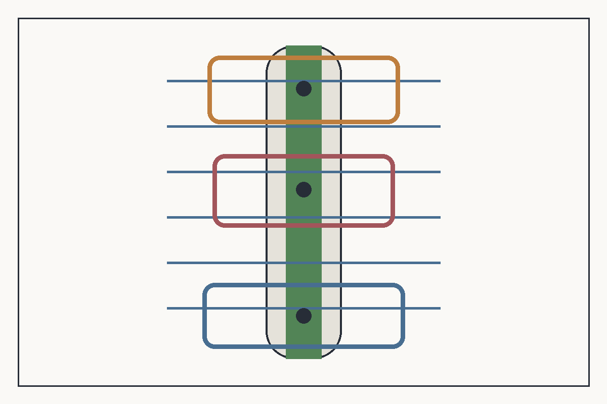
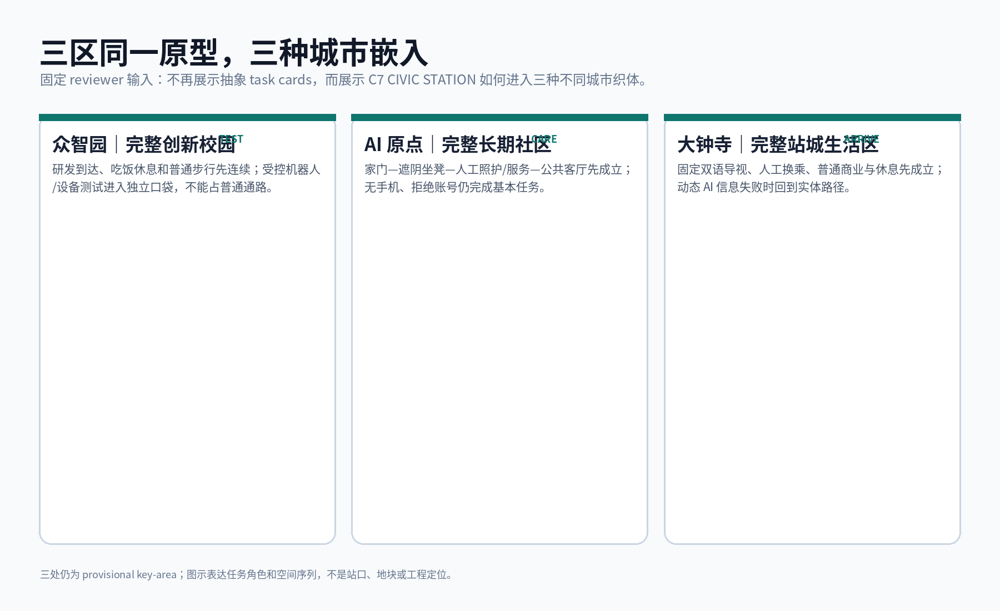
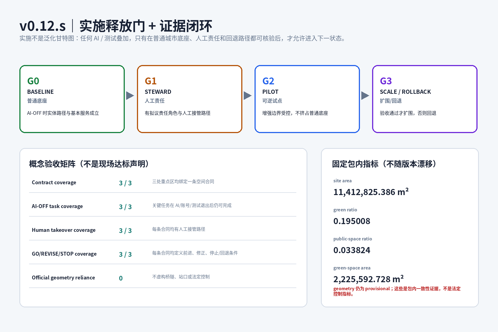

设计依据与资料清单
依据资格预审公告、brief/site-package、面向智能体任务书、公开资料登记表和 processed fact pack。项目约 43.6 km² 统筹研究范围、约 11.4 km² 总体设计范围，三处重点区域合计约 368.4 ha。正式容积率、建筑高度、密度、绿地法定指标、退界、权属、市政、消防、文保与道路红线仍缺失，因此概念建筑和面积指标不写成审定规划条件。

三层范围工作框架
研究产业、人才、创新与长期城市生活的协同。
用地、慢行、蓝绿和公共空间形成连续网络。
众智园、AI 原点、大钟寺分别补齐具体城市能力。
统筹研究范围产业与未来城市研究
世界级 AI 生态被组织为“研究—转译—测试—采用—长期生活”的城市能力链。案例机制来自 Vector Institute、Mila、Alan Turing Institute、AI Singapore 100 Experiments、Seoul AI Hub 与 Punggol Digital District，借鉴的是组织机制而非其用地规模、建筑形式或投资强度。
C7 城市完整度合同
AI 不是第八项用地。它可以增强七项能力，但不能用来解释学校、照护、无障碍、绿地或公共空间为什么可以缺席。
总体设计范围城市更新与控规深度城市设计
总体结构为一脊、六段、六缝、三核：京张公共绿脊承担南北连续公共生活；六段完整度片区分别补齐不同日常能力；六条东西向缝合联系表达社区—公园—高校/园区—轨道/城市街区的步行与接驳意图；三核分别对应众智园完整创新校园、AI 原点完整长期社区与大钟寺完整站城生活区。

重点区域详细设计
科研、中试、孵化、企业服务、公共交流场与受控测试共同构成完整创新校园。
长期住宅、托育教育、照护、共享工作、普通商业、绿地和公共客厅形成短距离日常链。爽粉堡垒社区仅为命名彩蛋。
站城、普通商业、文化和城市采用并存；因 provisional polygon 定位风险，不据其推导真实工程位置。

AI 创新生态、人才画像与 AI+ 场景
五类画像：长期居民与家庭、学生与科研人员、创业者与企业员工、国际开发者与访问学者、服务劳动者/通勤者/访客。十个场景均写明使用者、现实问题、AI 角色、非 AI 基线、责任主体、失败时人工接管和评估方式。
低速机器人受控测试科研设备与算力共享成果—城市问题转译社区无障碍助手家庭机器人自愿测试共享空间调度遗产多语导览换乘与步行辅助AI 原生商业限期试营C7 完整度巡检
用地、建筑规模与拆改留方案
13 个概念用地分区覆盖住宅、社区服务、科研、文化、教育、商业服务和公园绿地。建筑层仅用小尺度原型验证“住—学—护—工—交”邻接关系。conceptual_floors 是容量测试，不是建筑高度、容积率或审批指标；逐栋现状、权属、结构、消防、文保资料缺失，因此不做确定拆改留结论。
交通、轨道、市政与公共服务设施
道路层只表达慢行、自行车、绿道与轨道接驳的概念联系，不修改快速路和主干路，也不把概念中心线称为道路红线。公共服务优先补托育/教育、照护、人工服务、社区公共厅和普通商业。端侧算力、充电、机器人维护等新型基础设施必须服从消防、能源、网络和市政专业条件。

蓝绿空间、公共空间与城市风貌
京张公共绿脊首先承担步行、骑行、无障碍、文化记忆、遮阴、雨洪和免费停留，再叠加数字导览与环境感知。六个公共客厅坚持 public-first、non-app entry。风貌不追求“AI 建筑长相”，科技感来自服务、可维护性和空间组织，而不是芯片纹样或大屏立面。
更新项目清单、实施政策与分期计划
近期：C7 现状普查、慢行走查、社区服务缺口盘点与低扰动共享空间试点。中期：众智园深化科研—公共服务—受控测试接口，并补足日常服务与横向连接。长期：在可靠站点、权属和交通资料基础上深化南段站城、文化与市场转化协同。所有分期为研究顺序，不是开工承诺。
指标体系、面积复算与合规矩阵
当前包包含九组 GeoJSON，可复算临时边界、概念用地、建筑、道路、绿地、公共空间与分期。总体临时多边形约 11,412,825 m² 只用于包内量级一致性检查，不升级为官方面积依据。constraints.geojson 有意保持空 FeatureCollection，并在 metadata 声明缺失的 official constraints 与补数动作。

风险、版权与合规说明
主要风险包括官方精确边界未取得、大钟寺临时定位风险、现状建筑/权属/控规/市政/消防/文保/交通调查不足。图件使用本地自生成图形与公开/清权数据，不嵌入商业地图瓦片、远程字体、未经许可图片或第三方商标。AI 参与研究、写作、数据组织、图件与校验，人类最终判断由提交者承担。
参考资料
完整机器可读来源见 sources.json；设计假设见 assumptions.json；指标见 metrics.json；任务响应、标准和设计深度分别见三个矩阵。任何未进入正式资料体系的案例仅作机制研究，不用于支撑法定空间控制结论。